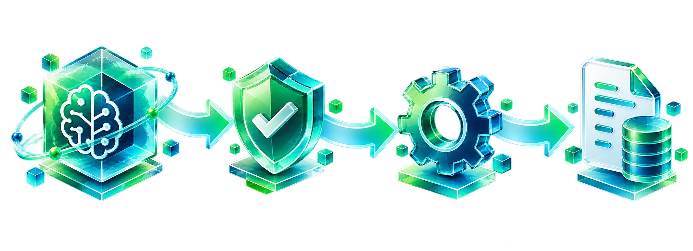

01
Kiến trúc AI AgentAI Agent Architecture
LLM · vòng lặp · gọi công cụ · điều phốiLLM · agent loop · tool calling · orchestration
KIẾN TRÚC AI AGENT · AI AGENT ARCHITECTURE
LLM đề xuất. Runtime điều phối. Công cụ thực thi.The model proposes. The runtime orchestrates. Tools execute.
4 UNIT · 4 HỌC PHẦN
Từ kiến trúc nền tảng đến vận hành Agent an toàn.From core architecture to secure agent operations.
LLM · vòng lặp · gọi công cụ · điều phốiLLM · agent loop · tool calling · orchestration
Truy xuất · grounding · tích hợp công cụRetrieval · grounding · tool integration
Workflow · phê duyệt · đánh giáWorkflows · approvals · evaluation
Quyền truy cập · log · quan sátAccess control · logs · observability
Mỗi Unit kết hợp lý thuyết và thực hành Python.Every unit combines theory with Python practice.
TỪ NỀN TẢNG ĐẾN RUNTIME · FOUNDATIONS TO RUNTIME
Video 01 giới thiệu hệ thống Agent; Video 02 đi sâu vào Harness và Runtime.Video 01 introduces the agent system; Video 02 explores its harness and runtime.
Chatbot · workflow · agent loop · ReAct · tool callingChatbots · workflows · agent loop · ReAct · tool calling
State · execution loop · giới hạn thực thi · traceState · execution loop · execution limits · traces
MỘT MODEL CHƯA PHẢI LÀ CẢ HỆ THỐNG · A MODEL IS NOT THE WHOLE SYSTEM
Nhận input → sinh outputInput → generated output
Khả năng hành động đến từ hệ thống và quyền được cấp.Actions come from the surrounding system and its granted permissions.
ĐẦU VÀO → MODEL → ĐẦU RA / INPUT → MODEL → OUTPUT
Suy luận và sinh tokenReasoning and token generation
AI CHỌN BƯỚC TIẾP THEO? · WHO CHOOSES THE NEXT STEP?
Ứng dụng hoặc người dùng đưa yêu cầu tiếp theo.The app or user supplies the next prompt.
Code chọn bước tiếp theo theo trình tự đã thiết kế.Code selects the next step from a predefined sequence.
Model chọn hành động phù hợp trong phạm vi cho phép.The model chooses an allowed action based on what it observes.
Ứng dụng thực tế có thể kết hợp workflow cố định và quyết định của Agent.Real applications can combine fixed workflows with agent decisions.
NHÌN AGENT NHƯ MỘT HỆ THỐNG · THINK IN SYSTEMS
Đây là khung tư duy để phân tích hệ thống, không phải định nghĩa duy nhất.This is a framework for analyzing systems, not a universal definition.
AI ĐỀ XUẤT · RUNTIME KIỂM SOÁT · TOOL THỰC THI
Model đề xuất hành động; Runtime kiểm tra và điều phối; Executor thực thi.The model proposes; the runtime validates and orchestrates; the executor runs the action.
RUNTIME DUY TRÌ VÒNG LẶP · THE RUNTIME RUNS THE LOOP
Vòng lặp tiếp tục đến khi có câu trả lời cuối, cần thêm thông tin hoặc chạm giới hạn.The loop continues until a final answer, more information, or an execution limit.
Nếu tiếp tục, Runtime gửi context đã cập nhật lại cho Model.If continuing, the runtime sends updated context back to the model.
REASON → ACT → OBSERVE
Ví dụ: tra cứu tài liệu để trả lời một câu hỏi về công ty.Example: search documents to answer a question about a company.
Cần tra cứu tài liệu để có căn cứ.Search documents to find supporting evidence.
Yêu cầu gọi search_documents.Request the search_documents tool.
Kiểm tra tài liệu; tìm tiếp hoặc tổng hợp.Review the documents; search again or summarize.
Reason mô tả quyết định bước tiếp theo; không cần công khai suy luận nội bộ.Reason describes the next-step decision; private chain-of-thought need not be exposed.
YÊU CẦU GỌI TOOL ≠ THỰC THI TOOL / JSON TOOL REQUEST ≠ TOOL EXECUTION
{
"name": "search_documents",
"arguments": {
"query": "AI Agent architecture"
}
}
MỘT YÊU CẦU ĐI QUA AGENT · ONE REQUEST THROUGH AN AGENT
Yêu cầu: “Tổng hợp năng lực AI của công ty từ tài liệu đã có.”Request: “Summarize the company’s AI capabilities from the available documents.”
Runtime tạo context và gửi prompt.The runtime builds context and sends the prompt.
Model yêu cầu search_documents.The model requests search_documents.
Executor trả về tài liệu tìm được.The executor returns the retrieved documents.
Model tổng hợp nội dung dựa trên kết quả.The model summarizes from the observed results.
Đừng chỉ đọc câu trả lời cuối; hãy kiểm tra trace và kết quả tool.Do not inspect only the final answer; verify the trace and tool result.
Dùng phím mũi tên trái/phải, Page Up/Page Down, Home hoặc End để chuyển trang. Use the left/right arrows, Page Up/Page Down, Home, or End to navigate.